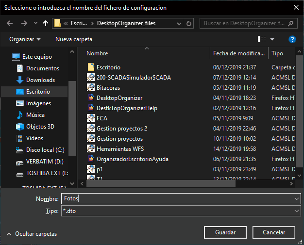
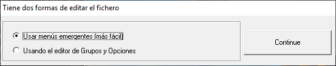
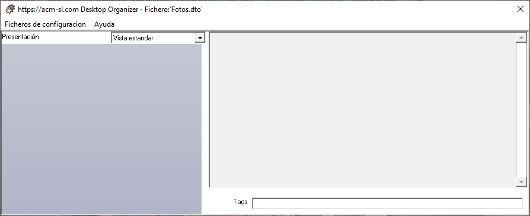

Creación de un fichero de configuración
El Organizador de Escritorio sirve tanto para consultar un fichero de configuración, como para crearlo o modificarlo.
Se puede crear un fichero de configuración nuevo de dos formas:
- Especificando la opción "Crear un fichero de configuración nuevo" al momento de ejecutarlo. Ver "Ejecución de la aplicación".
- Usando la opción "Crear nuevo" del menú "Ficheros de Configuración", cuando estamos visualizando otro fichero. Ver "Descripción de la interfaz de usuario".
En ambos casos, el programa pedirá el nombre que quiere darle al fichero nuevo. Para ello presentará el formulario correspondiente, abierto en el subdirectorio "DesktopOrganizer_files", situado debajo del directorio correspondiente al Escritorio. Ver siguiente figura.

Teclee el nombre deseado (p.e., en este ejemplo hemos elegido "Fotos"), y pulse "Guardar".
Aparecerá el siguiente formulario, donde podrá escoger dos formas de comenzar la edición del nuevo fichero.

Elija la opción "Usar menús emergentes", y pulse "Continue".
Aparecerá el formulario principal del programa, vacío, según se muestra en la siguiente imagen.

A partir de aquí debe comenzar la edición del fichero, añadiendo Grupos y Opciones a los Grupos. Esto lo puede hacer de varias formas
Creación de Opciones